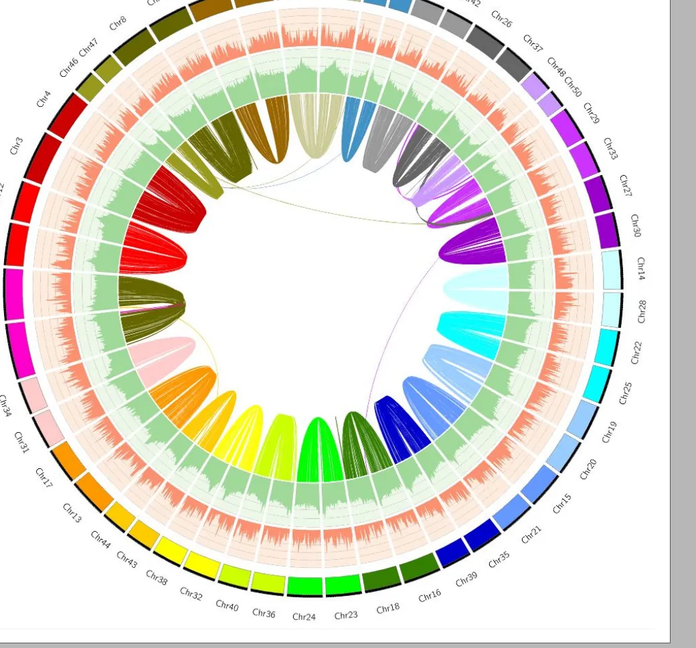
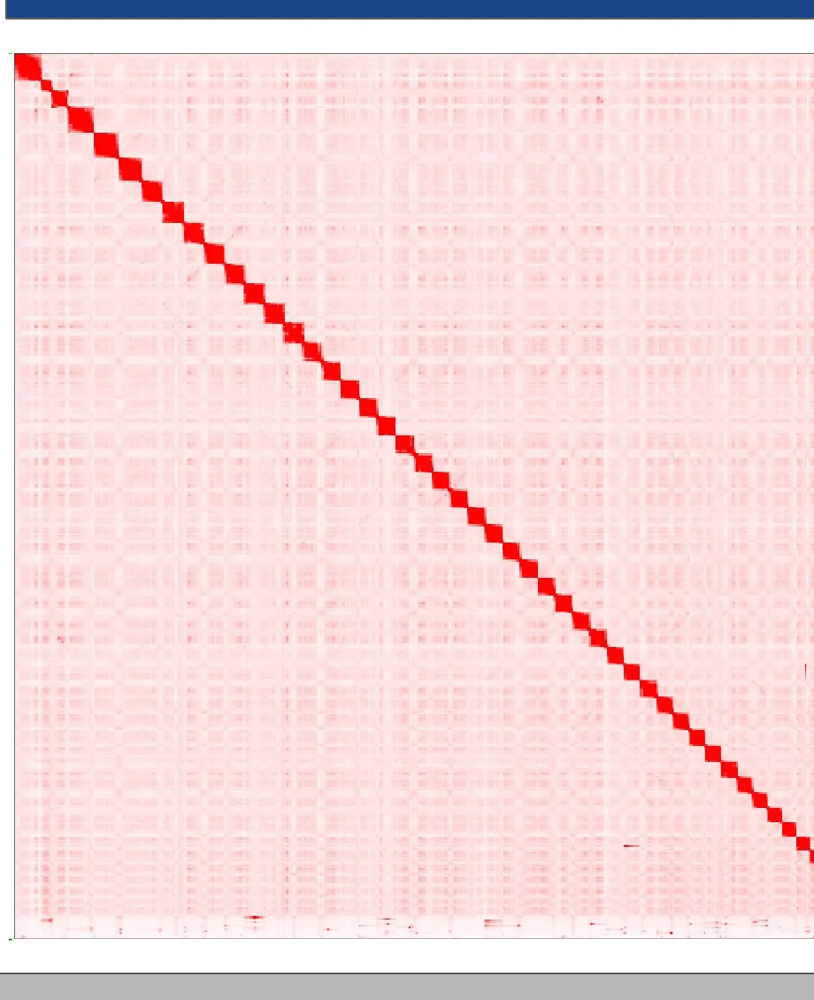
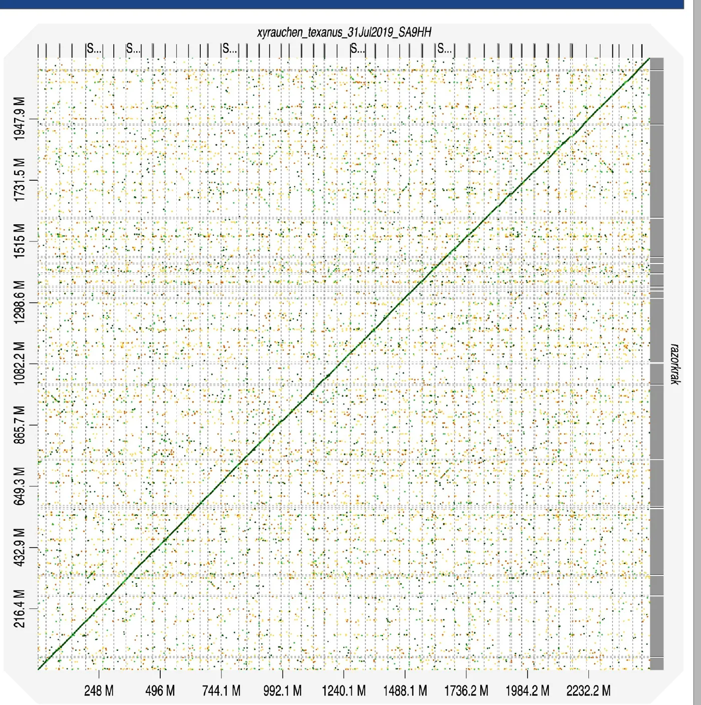

Genomics Research Assistant, Krabbenhoft Lab, University at Buffalo · 2024 to 2025
Reassembling the Razorback Sucker Genome with Newer Long-Read Tools
Does a newer toolchain build a better genome from the same old sequencing data? I rebuilt the endangered razorback sucker genome to find out.
The problem
The razorback sucker (Xyrauchen texanus) is an endangered fish in the sucker family. Its genome had been assembled twice before, in 2018 and 2021, from the same Nanopore reads.
If new tools can improve an assembly built from old data, researchers may not need to re-sequence samples that are hard to get. That matters most for rare species.
What I did
Wet lab to reads
I ran the DNA extraction and Nanopore library preparation, including QC for downstream assembly.
A scripted, reproducible pipeline
Custom Bash scripts chained the stages below, and I troubleshot the assembly tools for parallel execution on a SLURM-managed cluster.
Compare like with like
The 2018, 2021 and new 2024 assemblies all start from the same sequencing data, and are compared by length, N50 and BUSCO completeness.
Results



| 2018 | 2021 | 2024 | |
|---|---|---|---|
| Final assembly length (Gb) | 2.39 | 2.15 | 2.12 |
| N50 (Mb) | 48.60 | 43.77 | 43.18 |
| BUSCO complete (%) | 97.6 | 98.2 | 97.0 |
| Complete, single copy (%) | 52.7 | 51.6 | 51.6 |
| Complete, duplicated (%) | 44.9 | 46.6 | 45.4 |
| Fragmented (%) | 0.6 | 0.4 | 0.7 |
| Missing (%) | 1.8 | 1.4 | 2.3 |
| Stage | Tool |
|---|---|
| Basecalling | Dorado |
| Read filter | fastp, reads over 10 kb |
| Read correction | Dorado Herro |
| Contig assembly | Hifiasm with Hi-C data |
| Polishing | Pilon, with BUSCO between rounds |
| Quality filter | fastq, Q20 |
| Duplicate removal | Purge Dups |
| Contamination check | Kraken |
| Scaffolding | Yahs, reviewed in Juicebox 3D |
What I learned and what I would do differently
- The new assembly is comparable to the earlier ones, not better. The likely reason is the read-correction step: Herro recommends reads longer than 10 kb, and this older dataset has many shorter reads, so a large share was filtered out at the start.
- That filter is exactly the kind of failure I look for. The pipeline finished cleanly and every stage reported success, yet a large share of the data was gone before assembly began. Share of reads removed: [TODO: % of reads under 10 kb].
- A pipeline is only as good as its worst edge case. Next steps are lowering the length cutoff, annotating the assembly, and repeating the process on other organisms.
Tools
Links
Re-assembling from the same reads showed where newer tools help and where a single default can quietly cap the result.